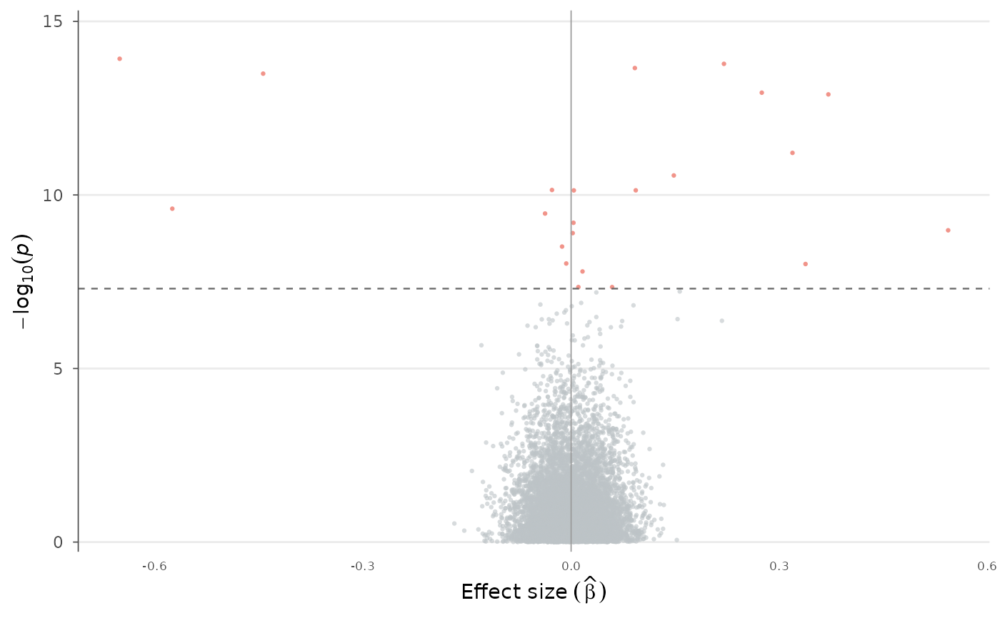

Plot effect size (BETA) against statistical significance (-log10(p)), revealing both the magnitude and direction of genetic effects. Unlike RNA-seq volcano plots, this variant can color by chromosome and scale point size by allele frequency.
Usage
volcano_plot(
data,
beta = NULL,
p = NULL,
snp = NULL,
p_threshold = 5e-08,
beta_threshold = NULL,
color_by = "significance",
size_by = NULL,
point_size = 0.8,
alpha = 0.6,
label_snps = NULL,
label_top_n = NULL,
colors = c(significant = "#E74C3C", nonsignificant = "#BDC3C7"),
title = NULL
)Arguments
- data
A
gwas_dataobject or data.frame.- beta, p, snp
Column name overrides.
- p_threshold
P-value significance threshold.
- beta_threshold
Minimum |BETA| to consider significant.
- color_by
How to color points: "significance", "chromosome", or a column name.
- size_by
Column name to scale point size (e.g. "AF"), or NULL.
- point_size
Base point size (used when size_by is NULL).
- alpha
Point transparency.
- label_snps
Character vector of SNP IDs to label.
- label_top_n
Label the top N most significant SNPs.
- colors
Named color vector: "significant" and "nonsignificant" for significance mode, or any custom palette.
- title
Plot title.
Examples
data(example_gwas, package = "ggwas")
volcano_plot(example_gwas)
